Use Case Diagrams describe the relationships and dependencies between a group of Use Cases and the Actors participating in the process.
It is important to notice that Use Case Diagrams are not suited to represent the design, and cannot describe the internals of a system. Use Case Diagrams are meant to facilitate the communication with the future users of the system, and with the customer, and are specially helpful to determine the required features the system is to have. Use Case Diagrams tell, what the system should do but do not — and cannot — specify how this is to be achieved.
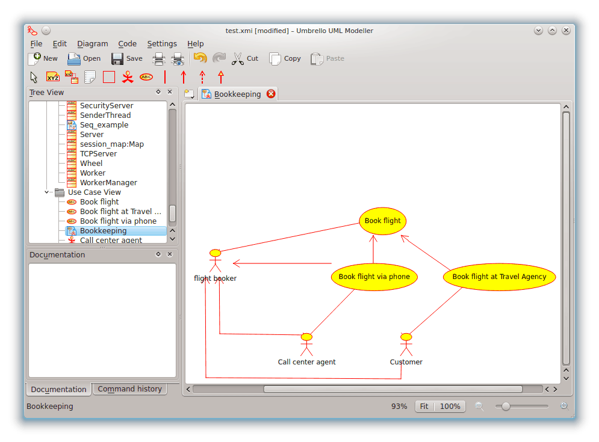
Umbrello UML Modeller showing a Use Case Diagram
A Use Case describes — from the point of view of the actors — a group of activities in a system that produces a concrete, tangible result.
Use Cases are descriptions of the typical interactions between the users of a system and the system itself. They represent the external interface of the system and specify a form of requirements of what the system has to do (remember, only what, not how).
When working with Use Cases, it is important to remember some simple rules:
Each Use Case is related to at least one actor
Each Use Case has an initiator (i.e. an actor)
Each Use Case leads to a relevant result (a result with “business value”)
Use Cases can also have relationships with other Use Cases. The three most typical types of relationships between Use Cases are:
<<include>> which specifies that a Use Case takes place inside another Use Case
<<extends>> which specifies that in certain situations, or at some point (called an extension point) a Use Case will be extended by another.
Generalization specifies that a Use Case inherits the characteristics of the “Super”-Use Case, and can override some of them or add new ones in a similar way as the inheritance between classes.
An actor is an external entity (outside of the system) that interacts with the system by participating (and often initiating) a Use Case. Actors can be in real life people (for example users of the system), other computer systems or external events.
Actors do not represent the physical people or systems, but their role. This means that when a person interacts with the system in different ways (assuming different roles) he will be represented by several actors. For example a person that gives customer support by the telephone and takes orders from the customer into the system would be represented by an actor “Support Staff” and an actor “Sales Representative”
Class Diagrams show the different classes that make up a system and how they relate to each other. Class Diagrams are said to be “static” diagrams because they show the classes, along with their methods and attributes as well as the static relationships between them: which classes “know” about which classes or which classes “are part” of another class, but do not show the method calls between them.
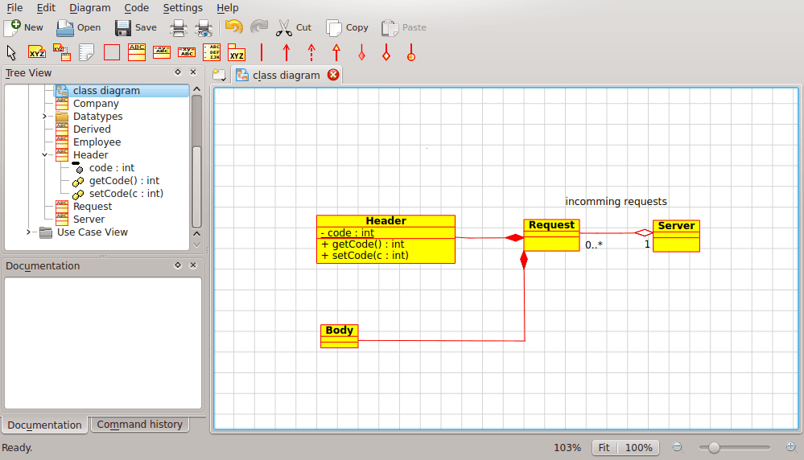
Umbrello UML Modeller showing a Class Diagram
A Class defines the attributes and the methods of a set of objects. All objects of this class (instances of this class) share the same behavior, and have the same set of attributes (each object has its own set). The term “Type” is sometimes used instead of Class, but it is important to mention that these two are not the same, and Type is a more general term.
In UML, Classes are represented by rectangles, with the name of the class, and can also show the attributes and operations of the class in two other “compartments” inside the rectangle.
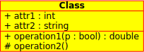
Visual representation of a Class in UML
In UML, Attributes are shown with at least their name, and can also show their type, initial value and other properties. Attributes can also be displayed with their visibility:
+Stands for public attributes#Stands for protected attributes-Stands for private attributes
Operations (methods) are also displayed with at least their name, and can also show their parameters and return types. Operations can, just as Attributes, display their visibility:
+Stands for public operations#Stands for protected operations-Stands for private operations
Classes can relate (be associated with) to each other in different ways:
Inheritance is one of the fundamental concepts of Object Oriented programming, in which a class “gains” all of the attributes and operations of the class it inherits from, and can override/modify some of them, as well as add more attributes and operations of its own.
In UML, a Generalization association between two classes puts them in a hierarchy representing the concept of inheritance of a derived class from a base class. In UML, Generalizations are represented by a line connecting the two classes, with an arrow on the side of the base class.
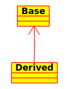
Visual representation of a generalization in UML
An association represents a relationship between classes, and gives the common semantics and structure for many types of “connections” between objects.
Associations are the mechanism that allows objects to communicate to each other. It describes the connection between different classes (the connection between the actual objects is called object connection, or link.
Associations can have a role that specifies the purpose of the association and can be uni- or bidirectional (indicates if the two objects participating in the relationship can send messages to the other, of if only one of them knows about the other). Each end of the association also has a multiplicity value, which dictates how many objects on this side of the association can relate to one object on the other side.
In UML, associations are represented as lines connecting the classes participating in the relationship,
and can also show the role and the multiplicity of each of the participants. Multiplicity is displayed as a
range [min..max] of non-negative values, with a star (*) on the maximum side representing infinite.
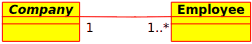
Visual representation of an Association in UML
Aggregations are a special type of associations in which the two participating classes don't have an equal status, but make a “whole-part” relationship. An Aggregation describes how the class that takes the role of the whole, is composed (has) of other classes, which take the role of the parts. For Aggregations, the class acting as the whole always has a multiplicity of one.
In UML, Aggregations are represented by an association that shows a rhomb on the side of the whole.
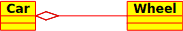
Visual representation of an Aggregation relationship in UML
Compositions are associations that represent very strong aggregations. This means, Compositions form whole-part relationships as well, but the relationship is so strong that the parts cannot exist on its own. They exist only inside the whole, and if the whole is destroyed the parts die too.
In UML, Compositions are represented by a solid rhomb on the side of the whole.
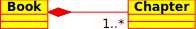
Class diagrams can contain several other items besides classes.
Interfaces are abstract classes which means instances can not be directly created of them. They can contain operations but no attributes. Classes can inherit from interfaces (through a realisation association) and instances can then be made of these diagrams.
Datatypes are primitives which are typically built into a programming language. Common examples include integers and booleans. They can not have relationships to classes but classes can have relationships to them.
Enums are a simple list of values. A typical example is an enum for days of the week. The options of an enum are called Enum Literals. Like datatypes they can not have relationships to classes but classes can have relationships to them.
Sequence Diagrams show the message exchange (i.e. method call) between several Objects in a specific time-delimited situation. Objects are instances of classes. Sequence Diagrams put special emphasis in the order and the times in which the messages to the objects are sent.
In Sequence Diagrams objects are represented through vertical dashed lines, with the name of the Object on the top. The time axis is also vertical, increasing downwards, so that messages are sent from one Object to another in the form of arrows with the operation and parameters name.
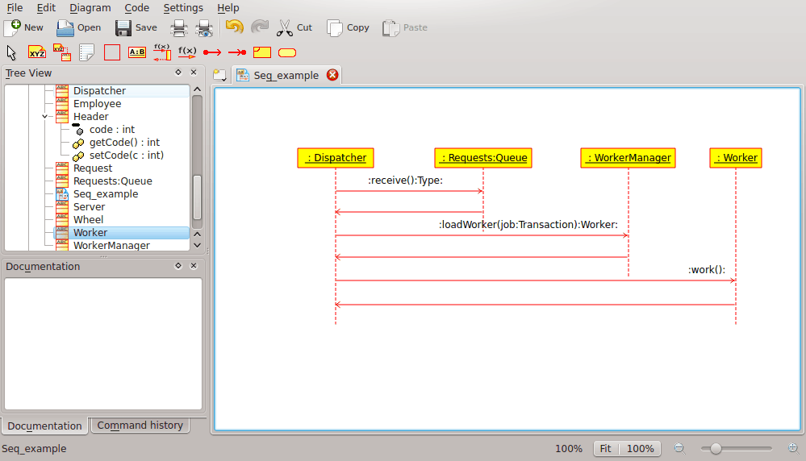
Umbrello UML Modeller showing a Sequence Diagram
Messages can be either synchronous, the normal type of message call where control is passed to the called object until that method has finished running, or asynchronous where control is passed back directly to the calling object. Synchronous messages have a vertical box on the side of the called object to show the flow of program control.
Collaboration Diagrams show the interactions occurring between the objects participating in a specific situation. This is more or less the same information shown by Sequence Diagrams but there the emphasis is put on how the interactions occur in time while the Collaboration Diagrams put the relationships between the objects and their topology in the foreground.
In Collaboration Diagrams messages sent from one object to another are represented by arrows, showing the message name, parameters, and the sequence of the message. Collaboration Diagrams are specially well suited to showing a specific program flow or situation and are one of the best diagram types to quickly demonstrate or explain one process in the program logic.
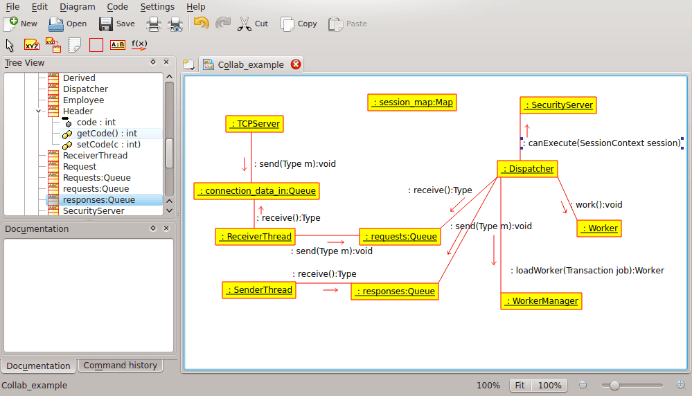
Umbrello UML Modeller showing a Collaboration Diagram
State Diagrams show the different states of an Object during its life and the stimuli that cause the Object to change its state.
State Diagrams view Objects as state machines or finite automates that can be in one of a set of finite states and that can change its state via one of a finite set of stimuli. For example an Object of type NetServer can be in one of following states during its life:
Ready
Listening
Working
Stopped
and the events that can cause the Object to change states are
Object is created
Object receives message listen
A Client requests a connection over the network
A Client terminates a request
The request is executed and terminated
Object receives message stop
etc
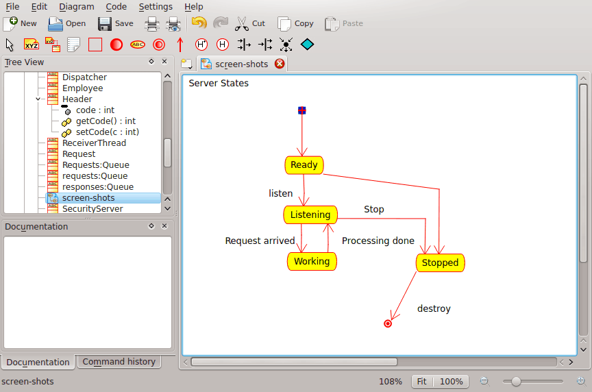
Umbrello UML Modeller showing a State Diagram
States are the building block of State Diagrams. A State belongs to exactly one class and represents a summary of the values the attributes of a class can take. A UML State describes the internal state of an object of one particular class
Note that not every change in one of the attributes of an object should be represented by a State but only those changes that can significantly affect the workings of the object
There are two special types of States: Start and End. They are special in that there is no event that can cause an Object to return to its Start state, in the same way as there is no event that can possible take an Object out of its End state once it has reached it.
Activity Diagrams describe the sequence of activities in a system with the help of Activities. Activity Diagrams are a special form of State Diagrams, that only (or mostly) contains Activities.
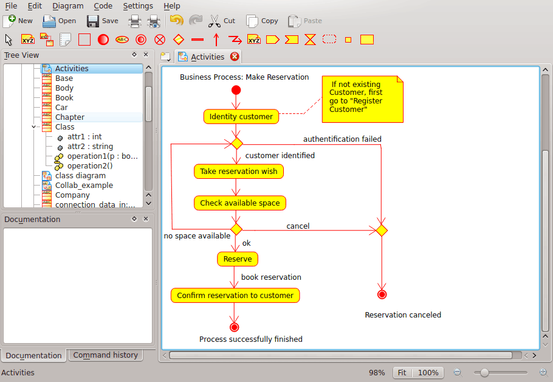
Umbrello UML Modeller showing an Activity Diagram
Activity Diagrams are similar to procedural Flux Diagrams, with the difference that all Activities are clearly attached to Objects.
Activity Diagrams are always associated to a Class, an Operation or a Use Case.
Activity Diagrams support sequential as well as parallel Activities. Parallel execution is represented via Fork/Wait icons, and for the Activities running in parallel, it is not important the order in which they are carried out (they can be executed at the same time or one after the other)
An Activity is a single step in a process. One Activity is one state in the system with internal activity and, at least, one outgoing transition. Activities can also have more than one outgoing transition if they have different conditions.
Activities can form hierarchies, this means that an Activity can be composed of several “detail” Activities, in which case the incoming and outgoing transitions should match the incoming and outgoing transitions of the detail diagram.
There are a few elements in UML that have no real semantic value for the model, but help to clarify parts of the diagram. These elements are
Text lines
Text Notes and anchors
Boxes
Text lines are useful to add short text information to a diagram. It is free-standing text and has no meaning to the Model itself.
Notes are useful to add more detailed information about an object or a specific situation. They have the great advantage that notes can be anchored to UML Elements to show that the note “belongs” to a specific object or situation.
Boxes are free-standing rectangles which can be used to group items together to make diagrams more readable. They have no logical meaning in the model.
Component Diagrams show the software components (either component technologies such as KParts, CORBA components or Java Beans or just sections of the system which are clearly distinguishable) and the artifacts they are made out of such as source code files, programming libraries or relational database tables.
Components can have interfaces (i.e. abstract classes with operations) that allow associations between components.
Deployment diagrams show the runtime component instances and their associations. They include Nodes which are physical resources, typically a single computer. They also show interfaces and objects (class instances).
Entity Relationship Diagrams (ER Diagrams) show the conceptual design of database applications. They depict the various entities (concepts) in the information system and the existing relationships and constraints between them. An extension of Entity Relationship Diagrams named 'Extended Entity Relationship Diagrams' or 'Enhanced Entity Relationship Diagrams' (EER), are used to incorporate Object Oriented design techniques in ER Diagrams.
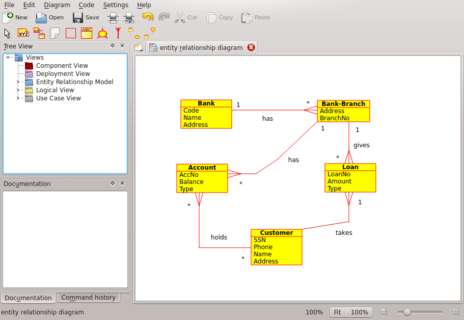
Umbrello showing an Entity Relationship Diagram
An Entity is any concept in the real world with an independent existence. It may be an object with a physical existence ( example, Computer, Robot) or it may be an object with a conceptual existence ( eq: University Course). Each entity has a set of attributes which describe the properties of the Entity.
Note: No standard notations exist for depicting ER Diagrams. Different texts on this subject use different notations. The concepts and notations for EER diagrams used in Umbrello are from the following book : Elmasri R. and Navathe S. (2004). Fundamentals of Database Systems 4th edn. Addison Wesley
In an ER Diagram, Entities are represented by rectangles, with the name of the entity at the top, and can also show the attributes of the entity in another “compartment” inside the rectangle.
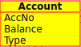
Visual representation of an entity in an ER Diagram
In ER Diagrams , Entity Attributes are shown with their name in a different compartment of the Entity to which they belong.
Constraints in ER Diagrams specify the restrictions on data in the information schema.
There are four types of constraints supported in Umbrello :
Primary Key: The set of attributes declared as primary key are unique to the entity. There can be only one primary key in an Entity and none of its constituent attributes can be NULL.
Unique Key: The set of attributes declared as unique are unique to the entity. There can be many unique constraints on an Entity. Its constituent attributes can be NULL. Unique Keys and Primary Keys uniquely identify a row in a table ( entity )
Foreign Key: A Foreign Key is a referential constraint between two tables. The foreign key identifies a column or a set of columns in one (referencing) table that refers to a column or set of columns in another (referenced) table. The columns in the referenced table must form a primary key or unique key.
Check Constraint: A check constraint (also known as table check constraint) is a condition that defines valid data when adding or updating an entry in a table of a relational database. A check constraint is applied to each row in the table. The constraint must be a predicate. It can refer to a single or multiple columns of the table.
Example: price >= 0
Specialization is a way to form new entities using entities that have already been defined. The new entities, known as derived entities, take over (or inherit) attributes of the pre-existing entities, which are referred to as base entities . It is intended to help reuse existing data with little or no modification.
In Umbrello, one can specify Disjoint and Overlapping Specialization
Disjoint Specialization specifies that the subclasses of the specialization must be disjoint. This means that an entity can be a member of at most one of the derived entities of the specialization
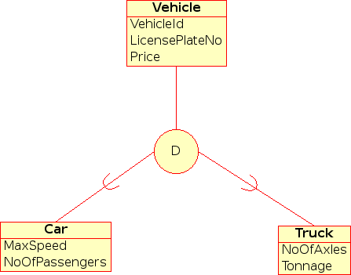
Visual representation of Disjoint Specialization in EER Diagram
When the derived entities are not constrained to be disjoint, their set of entities are said to be in overlapping specialization. This means that the same real world entity may be a member of more than one derived entity of the specialization
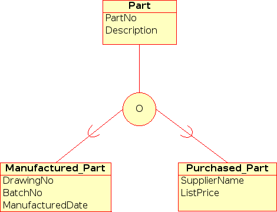
Visual representation of Overlapping Specialization in EER Diagram
A derived Entity is said to be a Category when it represents a collection of objects that is a subset of Union of the distinct entity types. A Category is modelled when the need arises for a single superclass/subclass relationship with more than one superclass, where the superclasses represent different entity types. ( Much like multiple inheritance in Object Oriented Programming ).
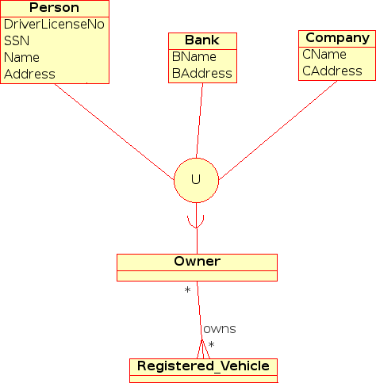
Visual representation of a Category in EER Diagram